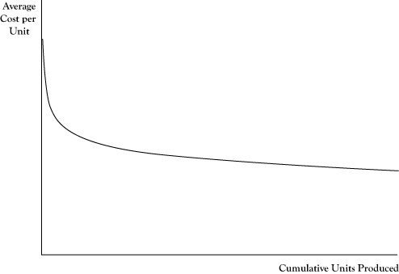

In the previous two chapters we examined the economics underlying decisions related to which goods and services a business concern will sell, where it will sell them, how it will sell them, and in what quantities. Another challenge for management is to determine how to acquire and organize its production resources to best support those commitments. In this chapter and in the following chapter we will be discussing key concepts and principles from microeconomics that guide its organization and production activities to improve profitability and be able to compete effectively.
A number of highly useful methodologies have been developed based on the concepts and principles discussed. This text will not address specific techniques for tracking costs and planning production activities. Readers seeking guidance on these tasks might consult a text on cost accounting or operations management.Two classic texts on cost accounting and operations management are by Horngren (1972) and Stevenson (1986), respectively.
In Chapter 2 "Key Measures and Relationships", we cited average cost as a key performance measure in producing a good or service. Average cost reflects the cost on a per unit basis. A portion of the average cost is the amount of variable costs that can be assigned to the production unit. The other portion is the allocation of fixed costs (specifically those fixed costs that are not sunk), apportioned to each production unit.
The average cost generally varies as a function of the production volume per period. Since fixed costs do not increase with quantity produced, at least in the short run where production capabilities are relatively set, the portion of the average cost attributable to fixed cost is very high for small production volume but declines rapidly and then levels off as the volume increases.
The portion of average cost related to the variable cost usually changes less dramatically in response to production volume than the average fixed cost. In fact, in the example of the ice cream bar business in Chapter 2 "Key Measures and Relationships", we assumed the average variable cost of an ice cream bar would remain $0.30 per unit whether the operation sold a small volume or large volume of ice cream bars. However, in actual production environments, average variable cost may fluctuate with volume.
At very low production volumes, resources may not be used efficiently, so the variable cost per unit is higher. For example, suppose the ice cream bar venture operators purchase those bars wholesale from a vendor who delivers them in a truck with a freezer. Since the vendor’s charge for ice cream bars must cover the cost of the truck driver and truck operation, a large delivery that fills the truck is likely to cost less per ice cream bar than a very small delivery.
At the same time, pushing production levels to the upper limits of an operation’s capability can result in other inefficiencies and cause the average variable cost to increase. For example, in order to increase production volume in a factory, it may be necessary to pay workers to work overtime at a rate 1.5 times their normal pay rate. Another example is that machines may be overworked to drive higher volume but result in either less efficiency or higher maintenance cost, which translates into an increase in average variable cost.
Figure 4.1 "Breakdown of Average Cost Function Into Variable Cost and Fixed Cost Component" shows a general breakdown of average cost into average fixed cost and average variable cost. The figure reflects the earlier situations of variable cost inefficiencies at very low and very high production volumes. Note that even with the continued decline in the average fixed cost, there is a production level (marked Q*) where the average total cost is at its lowest value. Economists called the production volume where average cost is at the lowest value the capacityThe production volume where average cost is at the lowest value; the volume level where a business has the most efficient operation in terms of average cost. of the operation.
In conversational language, we often think of capacity of a container as the maximum volume the container can hold. In that sense of the word, it seems awkward to call the production level Q* the capacity when the graph indicates that it is possible to produce at higher volume levels but just that the average cost per unit will be higher. However, even in physics, the volume in a container can be changed by the use of pressure or temperature, so volume is not limited by the capacity under normal pressures and temperatures.
Figure 4.1 Breakdown of Average Cost Function Into Variable Cost and Fixed Cost Component

The production level corresponding to the lowest point on the graph for average cost indicates the short-run capacity of the business operation.
In the economic sense of the word, we might think of capacity as the volume level where we have the most efficient operation in terms of average cost. Many businesses can operate over capacity, up to some effective physical limit, but in so doing will pay for that supplemental production volume in higher costs, due to needing to employ either more expensive resources or less productive resources, creating congestion that slows production, or overusing resources that results in higher maintenance costs per unit.
If the price earned by the business at these overcapacity volumes is sufficiently high, the firm may realize more profit by operating over capacity than at the capacity point where total average cost is at its lowest. Similarly, if demand is weak and customers will pay a price well in excess of average cost only at volumes lower than capacity, the firm will probably do better by operating below capacity. However, if a firm that is operating well above capacity or well below capacity does not see this as a temporary situation, the discrepancy suggests that the firm is sized either too small or too large. The firm may be able to improve profits in future production periods by resizing its operations, which will readjust the capacity point. If the firm operates in a very competitive market, there may even be little potential for profit for firms that are not operating near their capacity level.
In the last chapter, we distinguished short-run demand from long-run demand to reflect the range of options for consumers. In the short run, consumers were limited in their choices by their current circumstances of lifestyles, consumption technologies, and understanding. A long-run time frame was of sufficient length that the consumer had the ability to alter her lifestyle and technology and to improve her understanding, so as to result in improved utility of consumption.
There is a similar dichotomy of short-run production decisions and long-run production decisions for businesses. In the short run, businesses are somewhat limited by their facilities, skill sets, and technology. In the long run, businesses have sufficient time to expand, contract, or modify facilities. Businesses can add employees, reduce employees, or retrain or redeploy employees. They can change technology and the equipment used to carry out their businesses.
The classification of short-run planning is more an indication of some temporary constraint on redefining the structure of a firm rather than a period of a specific length. In fact, there are varying degrees of short run. In a very brief period, say the coming week or month, there may be very little that most businesses can do. It will take at least that long to make changes in employees and they probably have contractual obligations to satisfy. Six months may be long enough to change employment structures and what supplies a firm uses, but the company is probably still limited to the facilities and technology they are using.
How long a period is needed until decisions are long term varies by the kind of organization or industry. A retail outlet might easily totally redefine itself in a matter of months, so for them any decisions going out a year or longer are effectively long-term decisions. For electricity power generators, it can take 20 years to plan, get approvals, and construct a new power generation facility, and their long-term period can be in terms of decades.
One important characteristic that distinguishes short-run productionA time frame that occurs soon enough that businesses, which are limited by their facilities, skill sets, and technology, cannot respond by changing their production capacity; a time frame in which there are fixed costs and variable costs. decisions and long-run production decisions is in the nature of costs. In the short run, there are fixed costs and variable costs. However, in the long run, since the firm has the flexibility to change anything about its operations (within the scope of what is technologically possible and they can afford), all costs in long-run productionA time frame that occurs far enough in the future that businesses have sufficient time to expand, contract, or otherwise modify their production capacity; a time frame during which all costs are variable. decisions can be regarded as variable costs.
Another important distinction between short-run production and long-run production is in the firm’s ability to alter its capacity. In a decidedly short-run time frame, the firm’s capacity or point of lowest average cost is effectively fixed. The firm may elect to operate either under or slightly over their capacity depending on the strength of market demand but cannot readily optimize production for that selected output level. In the long run, the firm is able to make decisions that alter its capacity point by resizing operations to where the firm expects to have the best stream of profits over time.
Because a business has the ability to redesign all of its operations to suit a targeted level of production, average cost curves for long-run planning are flatter than short-run average cost curves. If it appears that a low-volume operation would yield the best returns, the firm can be downsized to remove the cost of excess capacity and arrive at a lower average cost than would be achievable in the short run. By expanding its capacity, a firm would be able to perhaps even lower average cost, but certainly avoid the inefficiencies of being overcapacity, should higher production levels appear to be better.
One way to think of a long-run average cost curveA function for which each value reflects the lowest possible average cost of an operation resized to be optimal for that level of production. is that each point on the curve reflects the lowest possible average cost of an operation resized to be optimal for that level of production. For example, in Figure 4.2 "Graph of Long-Run Average Cost (LRAC) Function Shown as the Short-Run Average Cost (SRAC) at Capacity for Different Scales of Operation", the long-run average cost on curve LRAC at a production rate of 1000 units per period is the lowest cost, or cost at the capacity point, for a cost structure reflected by short-run average cost curve SRAC1. The long-run average cost at a production rate of 2000 units per production period is the lowest cost for average cost curve SRAC2 (which has a capacity of 2000). The long-run average cost at a production rate of 3000 units per production would be the average cost at capacity for SRAC3.
Like short-run average cost curves, long-run average cost curves trend downward at low target production rates, although the rate of decline in the long-run average cost curve is somewhat flatter due to the ability to readjust all factors of production. The typical reason for this declining long-run average cost curve at low production levels is because there are efficiencies in cost or production that can be exploited for modest increases in quantity. For example, for a business that is manufacturing major appliances or vehicles that require several assembly steps, in a larger operation it is possible to assign different assembly steps to different workers and, via this specialization, speed up the rate of production over what would be possible if the firm hired the same workers with each worker performing all assembly steps. As we pointed out in the previous chapter, customers who buy in large quantities can sometimes buy at a lower per unit price. Since most firms are buyers as well as sellers, and larger firms will buy in larger quantities, they can reduce the contribution of acquired parts and materials to the average cost.
Figure 4.2 Graph of Long-Run Average Cost (LRAC) Function Shown as the Short-Run Average Cost (SRAC) at Capacity for Different Scales of Operation

The ability to reduce long-run average cost due to increased efficiencies in production and cost will usually eventually subside. The production level at which the long-run average cost curve flattens out is called the minimum efficient scaleThe production level at which the long-run average cost curve flattens out.. (Since the business is able to adjust all factors of production in the long run, it can effectively rescale the entire operation, so the target production level is sometimes called the scaleThe target production level when a business is able to adjust all factors of production in the long run. of the business.) In competitive seller markets, the ability of a firm to achieve minimum efficient scale is crucial to its survival. If one firm is producing at minimum efficient scale and another firm is operating below minimum efficient scale, it is possible for the larger firm to push market prices below the cost of the smaller firm, while continuing to charge a price that exceeds its average cost. Facing the prospect of sustained losses, the smaller firm usually faces a choice between getting larger or dropping out of the market.
The increase in capacity needed to achieve minimum efficient scale varies by the type of business. A bicycle repair shop might achieve minimum efficient scale with a staff of four or five employees and be able to operate at an average cost that is no different than a shop of 40 to 50 repair persons. At the other extreme, electricity distribution services and telephone services that have very large fixed asset costs and low variable costs may see the long-run average cost curve decline even for large production levels and therefore would have a very high minimum efficient scale.
Most firms have a long-run average cost curve that declines and then flattens out; however, in some markets the long-run average cost may actually rise after some point. This phenomenon often indicates a limitation in some factors of production or a decline in quality in factors of production if the scale increases enough. For example, in agriculture some land is clearly better suited to certain crops than other land. In order to match the yield of the best acreage on land of lower quality, it may be necessary to spend more on fertilizer, water, or pest control, thereby increasing the average cost of production for all acreage used.
Businesses that are able to lower their average costs by increasing the scale of their operation are said to have economies of scaleA situation in which a business can lower its average costs by increasing the size of its operation.. Firms that will see their average costs increase if they further increase their scale will experience diseconomies of scaleA situation in which a business experiences an increase in average costs if it increases the size of its operation.. Businesses that have achieved at least their minimum efficient scale and would see the long-run average cost remain about the same with continued increases in scale may be described as having constant economies of scaleA situation in which a business that has achieved its least minimum efficient scale sees its long-run average cost remain about the same with continued increases in the size of its operation..
The impact of an increase of scale on production is sometimes interpreted in terms of “returns to scale.” The assessment of returns to scale is based on the response to the following question: If all factors of production (raw materials, labor, energy, equipment time, etc.) where increased by a set percentage (say all increased by 10%), would the percent increase in potential quantity of output created be greater, the same, or less than the percent increase in all factors of production? If potential output increases by a higher percent, operations are said to have increasing returns to scale. If output increases by the same percent, the operations show constant returns to scale. If the percent growth in outputs is less than the percent increase in inputs used, there are decreasing returns to scale.
Returns to scale are related to the concept of economies of scale, yet there is a subtle difference. The earlier example of gained productivity of labor specialization when the labor force is increased would contribute to increasing returns to scale. Often when there are increasing returns to scale there are economies of scale because the higher rate of growth in output translates to decrease in average cost per unit. However, economies of scale may occur even if there were constant returns to scale, such as if there were volume discounts for buying supplies in larger quantities. Economies of scale mean average cost decreases as the scale increases, whereas increasing returns to scale are restricted to the physical ratio between the increase in units of output relative to proportional increase in the number of inputs used.
Likewise, decreasing returns to scale often translate to diseconomies of scale. If increasing the acreage used for a particular crop by using less productive acreage results in a smaller increase in yield than increase in acreage, there are decreasing returns to scale. Unless the acreage costs less to use, there will be an increase in average cost per unit of crop output, indicating diseconomies of scale.
Most businesses provide multiple goods and services; in some cases, the number of goods and services is quite large. Whereas the motivation for providing multiple products may be driven by consumer expectations, a common attraction is the opportunity to reduce per unit costs. When a venture can appreciate such cost savings, the opportunity is called an economy of scopeThe ability of a business venture to achieve cost savings by providing multiple goods and services..
Of course, not just any aggregation of goods and services will create economies of scope. For significant economies of scope, the goods and services need to be similar in nature or utilize similar raw materials, facilities, production processes, or knowledge.
One type of cost savings is the ability to share fixed costs across the product and service lines so that the total fixed costs are less than if the operations were organized separately. For example, suppose we have a company that expands from selling one product to two similar products. The administrative functions for procurement, receiving, accounts payable, inventory management, shipping, and accounts receivable in place for the first product can usually support the second product with just a modest increase in cost.
A second type of cost savings occurs from doing similar activities in larger volume and reducing per unit variable costs. If multiple goods and services require the same raw materials, the firm may be able to acquire the raw materials at a smaller per unit cost by purchasing in larger volume. Similarly, labor that is directly related to variable cost may not need to be increased proportionally for additional products due to the opportunity to exploit specialization or better use of idle time.
In some cases, two or more products may be natural by-products of a production process. For example, in refining crude oil to produce gasoline to fuel cars and trucks, the refining process will create lubricants, fertilizers, petrochemicals, and other kinds of fuels. Since the refining process requires heat, the excess heat can be used to create steam for electricity generation that more than meets the refinery’s needs and may be sold to an electric utility. When multiple products occur at the result of a combined process, they are called joint productsThe result of a combined production process that creates a natural opportunity for an economy of scope. and create a natural opportunity for an economy of scope.
As with economies of scale, the opportunities for economies of scope generally dissipate after exploiting the obvious combinations of goods and services. At some point, the complexity of trying to administer a firm with too many goods and services will offset any cost savings, particularly if the goods and services share little in terms of production resources or processes. However, sometimes firms discover scope economies that are not so obvious and can realize increased economic profits, at least for a time until the competition copies their discovery.
The conventional approach to planning production is to start with the goods and services that a firm intends to provide and then decide what production configuration will achieve the intended output at the lowest cost. This is the cost approachStarting with the goods and services a firm intends to provide and then deciding what configuration will achieve output at the lowest cost. to production planning.Stevenson (1986) addresses this approach to production planning extensively. Once output goals are set, the expected revenue is essentially determined, so any remaining opportunity for profit requires reducing the cost as much as possible.
Although this principle of cost minimization is simple, actually achieving true minimization in practice is not feasible for most ventures of any complexity. Rather, minimization of costs is a target that is not fully realized because the range of production options is wide and the actual resulting costs may differ from what was expected in the planning phase.
Additionally, as we saw in Chapter 2 "Key Measures and Relationships", the decision about whether to provide a good or service and how much to provide requires an assessment of marginal cost. Due to scale effects, this marginal cost may vary with the output level, so firms may face a circular problem of needing to know the marginal cost to decide on the outputs, but the marginal cost may change depending on the output level selected. This dilemma may be addressed by iteration between output planning and production/procurement planning until there is consistency. Another option is to use sophisticated computer models that determine the optimal output levels and minimum cost production configurations simultaneously.
Among the range of procurement and production activities that a business conducts to create its goods and services, the firm may be more proficient or expert in some of the activities, at least relative to its competition. For example, a firm may be world class in factory production but only about average in the cost effectiveness of its marketing activities. In situations where a firm excels in some components of its operations, there may be an opportunity for improved profitability by recognizing these key areas, sometimes called core competenciesKey areas or components of operation in which a firm excels and that provide an opportunity for improved profitability. in the business strategy literature, and then determining what kinds of goods or services would best exploit these capabilities. This is the resource approachThe recognition of core competencies and the determination of what kinds of goods or services best exploit them. to the planning of production.Wernerfelt (1984) wrote one of the key initial papers on the resource-based view of management.
Conceptually, either planning approach will lead to similar decisions about what goods and services to provide and how to arrange production to do that. However, given the wide ranges of possible outputs and organizations of production to provide them, firms are not likely to attain truly optimal organization, particularly after the fact. The cost approach is often easier to conduct, particularly for a firm that is already in a particular line of business and can make incremental improvements to reduce cost. However, in solving the problem of how to create the goods and services at minimal cost, there is some risk of myopic focus that dismisses opportunities to make the best use of core competencies. The resource approach encourages more out-of-the-box thinking that may lead a business toward a major restructuring.
In Chapter 2 "Key Measures and Relationships", we discussed the principle for profit maximization stating that, absent constraints on production, the optimal output levels for the goods and services occur when marginal revenue equals marginal cost. This principle can be applied in determining the optimal level of any production resource input using the concepts of marginal product and marginal revenue product.
The marginal productThe amount of additional output that would be generated if one more unit of an input were obtained and processed. of a production input is the amount of additional output that would be created if one more unit of the input were obtained and processed. For example, if an accounting firm sells accountant time as a service and each hired accountant is typically billed to clients 1500 hours per year, this quantity would be the marginal product of hiring an additional accountant.
The marginal revenue productThe additional revenue created from one additional unit of an input; the marginal product of the input times the marginal revenue of the output. of a production input is the marginal revenue created from the marginal product resulting from one additional unit of the input. The marginal revenue product would be the result of multiplying the marginal product of the input times the marginal revenue of the output. For the example in the previous paragraph, suppose that at the current output levels, the marginal revenue from an additional billed hour of accountant service is $100. The marginal revenue product of an additional accountant would be 1500 times $100, or $150,000.
In determining if a firm is using the optimal level on an input If the marginal revenue product exceeds the marginal input cost, a firm can improve profitability by increasing the use of the input; if the marginal cost of the input exceeds the marginal revenue product, profit can be improved by decreasing use of the input., the marginal revenue product for an additional unit of input can be compared to the marginal cost of a unit of the input. If the marginal revenue product exceeds the marginal input cost, the firm can improve profitability by increasing the use of that input and the resulting increase in output. If the marginal cost of the input exceeds the marginal revenue product, profit will improve by decreasing the use of that input and the corresponding decrease in output. At the optimal level, the marginal revenue product and marginal cost of the input would be equal.
Suppose the marginal cost to hire an additional accountant in the previous example was $120,000. The firm would improve its profit by $30,000 by hiring one more accountant.
As noted earlier in the discussion of marginal revenue, the marginal revenue will change as output is increased, usually declining as output levels increase. Correspondingly, the marginal revenue product will generally decrease as the input and corresponding output continue to be increased. This phenomenon is called the law of diminishing marginal returns to an input Marginal revenue product will decrease as an input and corresponding output continue to be increased.. So, for the accounting firm, although they may realize an additional $30,000 in profit by hiring one more accountant, that does not imply they would realize $3,000,000 more in profits by hiring 100 more accountants.
If the marginal revenue product is measured at several possible input levels and graphed, the pattern suggests a relationship between quantity of input and marginal revenue product, as shown in Figure 4.3 "Typical Pattern of a Derived Demand Curve Relating the Marginal Revenue Product to Quantity of Input Employed in Production". Due to the law of diminishing marginal returns, this relationship will generally be negative. Thus the relationship looks much like the demand curve corresponding to output levels. In fact, this relationship is a transformation of the firm’s demand curve, expressed in terms of the equivalent marginal revenue product relative to number of units of input used. Due to the connection to the demand curve for output, the relationship depicted in Figure 4.3 "Typical Pattern of a Derived Demand Curve Relating the Marginal Revenue Product to Quantity of Input Employed in Production" is called a derived demand curveA negative relationship between quantity of input and marginal revenue product that is a transformation of a firm's demand curve..
Figure 4.3 Typical Pattern of a Derived Demand Curve Relating the Marginal Revenue Product to Quantity of Input Employed in Production

One difficulty in comparing marginal revenue product to the marginal cost of an input is that the mere increase in any single input is usually not enough in itself to create more units of output. For example, simply acquiring more bicycle frames will not result in the ability to make more bicycles, unless the manufacturer acquires more wheels, tires, brakes, seats, and such to turn those frames into bicycles. In cases like this, sometimes the principle needs to be applied to a fixed mix of inputs rather than a single input.
For the accounting firm in the earlier example, the cost to acquire an additional accountant is not merely the salary he is paid. The firm will pay for benefits like retirement contribution and health care for the new employee. Further, additional inputs in the form of an office, computer, secretarial support, and such will be incurred. So the fact that the marginal revenue product of an accountant is $150,000 does not mean that the firm would benefit if the accountant were hired at any salary less than $150,000. Rather, it would profit if the additional cost of salary, benefits, office expense, secretarial support, and so on is less than $150,000.
In cases where inputs are in high supply at the current market price and the market for inputs is competitive, the marginal cost of an input is roughly equal to the actual cost of acquiring it. So, in such a situation, the principle described earlier can be expressed in terms of comparing the marginal revenue product to price to acquire the input(s). If the number of accountants seeking a job were fairly substantial and competitive, the actual per unit costs involved in hiring one more accountant would be the marginal cost.
If the market of inputs is less competitive, a firm may have to pay a little higher than the prevailing market price to acquire more units because they will need to be hired away from another firm. In this situation, the marginal cost of inputs may be higher than the price to acquire an additional unit because the resulting price increase for the additional unit may carry over to a price increase of all units being purchased.
Suppose the salary required to hire a new accountant will be higher than what the firm is currently paying accountants with the same ability. Once the firm pays a higher salary to get a new accountant, they may need to raise the salaries of the other similar accountants they already hired just to retain them. In this instance, the marginal cost of hiring one more accountant could be substantially more than the cost directly associated with adding the new accountant. As a result of the impact on other salaries and associated costs of the hire, the firm may decide that the highest salary for a new accountant that the firm can justify may be on the order of $50,000, even though the resulting marginal revenue product is substantially greater.
If inputs are available in a ready supply, or there are close substitutes available that are in ready supply, the price of an additional unit of input typically reflects either the opportunity cost related to the value of the next best use of that input or the minimum amount needed to induce a new unit to become available. However, there are some production inputs that may be in such limited supply that even further price increases will not attract new units to become available, at least not quickly. In these cases, the marginal revenue product for an input may still considerably exceed its marginal cost, even after all available inputs are in use. The sellers of these goods and services may be aware of this imbalance and insist on a price increase for the input up to a level that brings marginal cost in balance with marginal revenue product. The difference between the amount the provider of the limited input supply is able to charge and the minimum amount that would have been necessary to induce the provider to sell the unit to the firm is called economic rentThe difference between the amount the provider of a limited input supply is able to charge and the minimum amount that would be necessary to induce the provider to sell the unit to a firm..
Suppose a contracting firm was hired to do emergency repairs to a major bridge. Due to the time deadline, the firm will need to hire additional construction workers who are already in the area. Normally, these workers may have been willing to work for $70 per hour. However, sensing the contracting firm is being paid a premium for the repairs, meaning the marginal revenue product of labor is high, and there are a limited number of qualified workers available, the workers can insist on being paid as much as $200 per hour for the work. The difference of $130 would be economic rent caused by the shortage of qualified workers available on short notice.
Economic rent can occur in agriculture when highly productive land is in limited supply or in some labor markets like professional sports or commercial entertainment where there is a limited supply of people who have the skills or name recognition needed to make the activity successful.
The resource view of production management is to make sure that all resources employed in the creation of goods and services are used as effectively as possible. Smart businesses assess the productivity of key production resources as a means of tracking improvements and in comparing their operations to those of other firms.
Earlier in this chapter we introduced the concept of marginal product. This measure reflects how productive an additional unit of that input would be in creating additional output. However, for some inputs, there are differences in marginal productivity across units. For example, in agriculture an acre of land in one location may be capable of better yields than an acre in another location. At any given input price, firms will seek to employ those units with the highest marginal product first.
In looking at the collective performance of a production operation, we need a measure of productivity that applies to all inputs being used rather than the last unit acquired. One means of doing this is using the measure of average productivityThe total number of units of output divided by the total units of an input; the total dollars in revenue or profit divided by the total units of an input., which is a ratio of the total number of units of output divided by the total units of an input. An alternative measure of average productivity would be the total dollars in revenue or profit divided by the total units of an input.
Computations of average productivity make sense for key inputs around which production processes are designed. In the example of the accounting firm used in this chapter, the number of accountants is probably a good choice. Average productivity could be in the form of labor hours billed divided by accountants hired. If a firm managed to sell 1600 billable hours in 1 year, but only 1500 billable hours in another year, the earlier year indicated higher productivity.
In retail stores, a key resource is the amount of floor space. The productivity of a store could be measured by the total revenue over a period divided by the available square footage. This measure could be compared to the same measure for other stores in the retail chain or with similar competitor stores. Even sections within the store can be compared for which types of goods and services sold are most effective in generating sales, although given that costs vary too, a better productivity measure here may be profit contribution (revenue minus variable cost) per square foot.
The productivity of firms may change over time. In the case of labor, the productivity of individual workers will rise as they gain experience and new workers can be trained more effectively. There is also an improvement in overall productivity from the increased knowledge of management in how to employ productive resources better. These productivity gains from experience and improved knowledge are sometimes called learning by doingProductivity gains that come from experience and improved knowledge.The economics of learning by doing was introduced by Arrow (1962).
In addition to the increased profit potential of improved productivity, new firms or firms starting new operations need to anticipate these gains in deciding whether to engage in a new venture. Often a venture will not look attractive if the assumed costs of production are based on the costs that apply in the initial periods of production. Learning improvements need to be considered as well. In some sense, decreased profits and even losses in the initial production periods are necessary investments for a successful long-term operation.
Improvements due to productivity gains will usually result in decreased average costs. The relationship between cumulative production experience and average cost is called the learning curveThe relationship between cumulative production experience and average cost.. An example appears in Figure 4.4 "Pattern of a Learning Curve Showing Average Cost Declining by a Fixed Percentage for Each Doubling of Cumulative Output". One point to be emphasized is that the quantity on the horizontal axis is cumulative productionTotal production to date., or total production to date, rather than production rate per production period. This is not a scale effect per se. Even if the firm continues to produce at the same rate each period, it will see declines in the average cost per unit of output, especially in the initial stages of operation.
One numerical measure of the impact of learning on average cost is called the doubling rate of reductionThe decrease in average cost that occurs each time cumulative production doubles.. The doubling rate is the reduction in average cost that occurs each time cumulative production doubles. If the average cost declines by 15% each time cumulative production doubles, that would be its doubling rate. A learning curve with a doubling rate of 15% may be called an 85% learning curve to indicate the magnitude of the average cost compared to when cumulative production was only half as large.
Figure 4.4 Pattern of a Learning Curve Showing Average Cost Declining by a Fixed Percentage for Each Doubling of Cumulative Output
Note that the number of units required to double cumulative production will get progressively higher. For example, if cumulative production now is 1000 units, the next doubling will occur at 2000 cumulative units, with the next doubling at 4000 cumulative units, and the following at 8000 cumulative units. Thus the rate of decline in average cost for each successive unit of production will diminish as cumulative production increases.